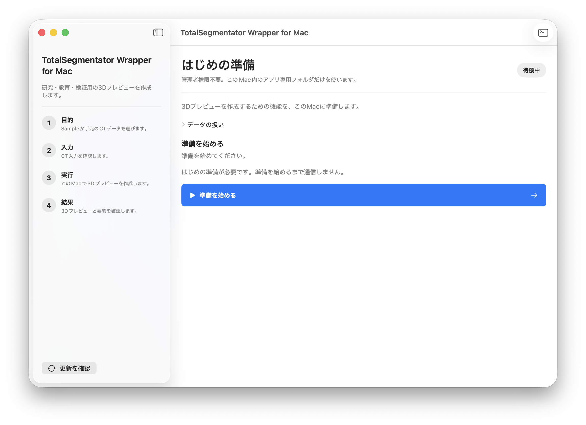
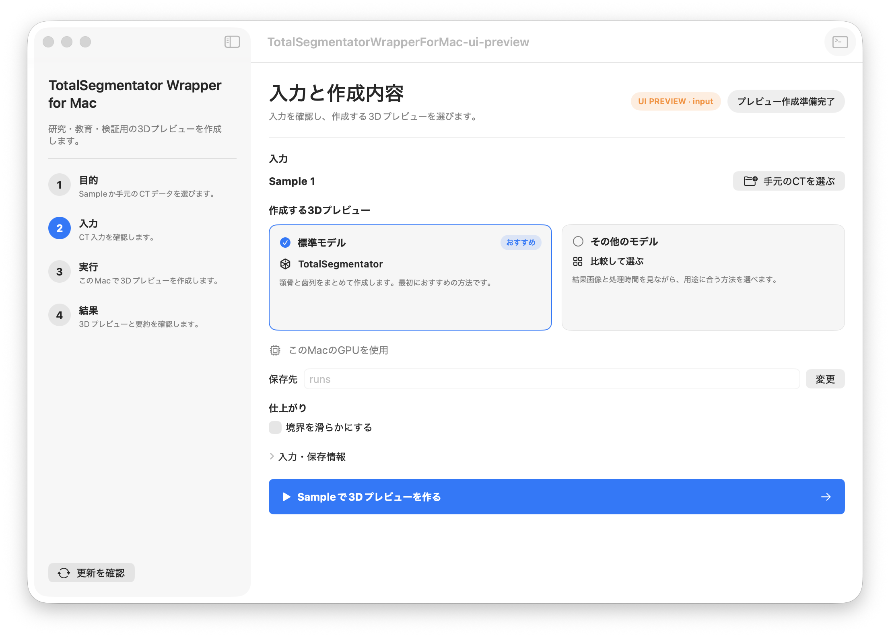
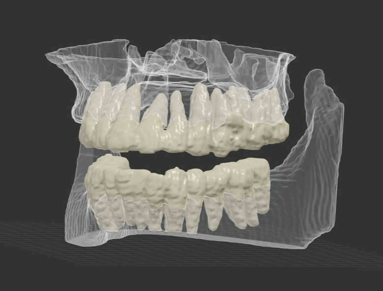
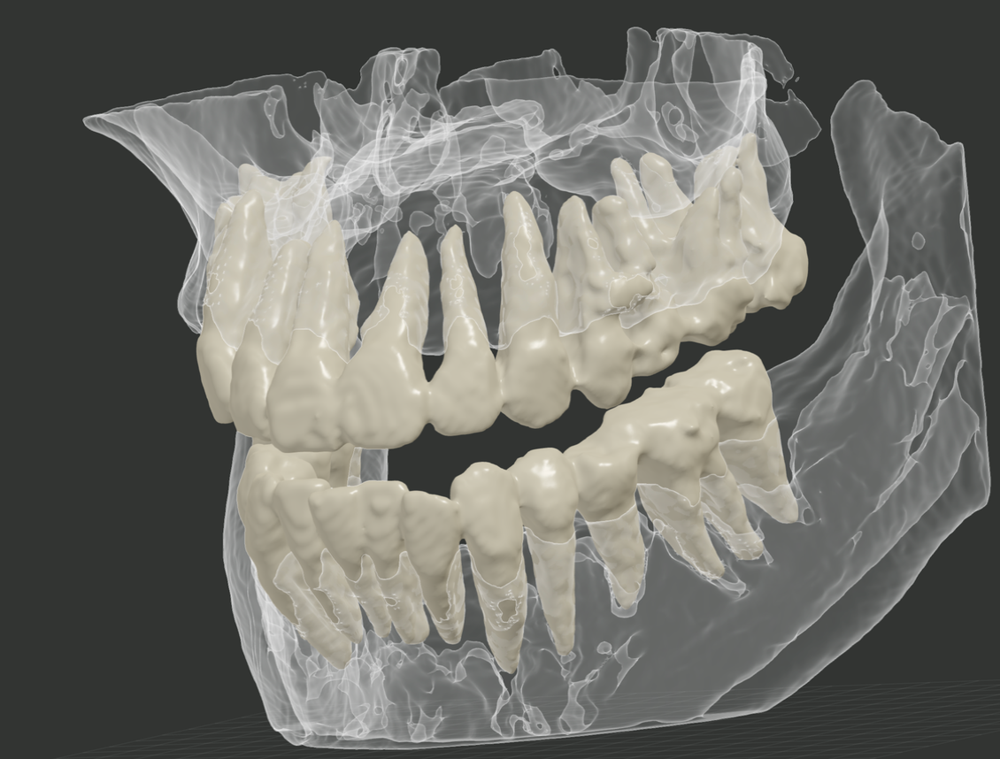
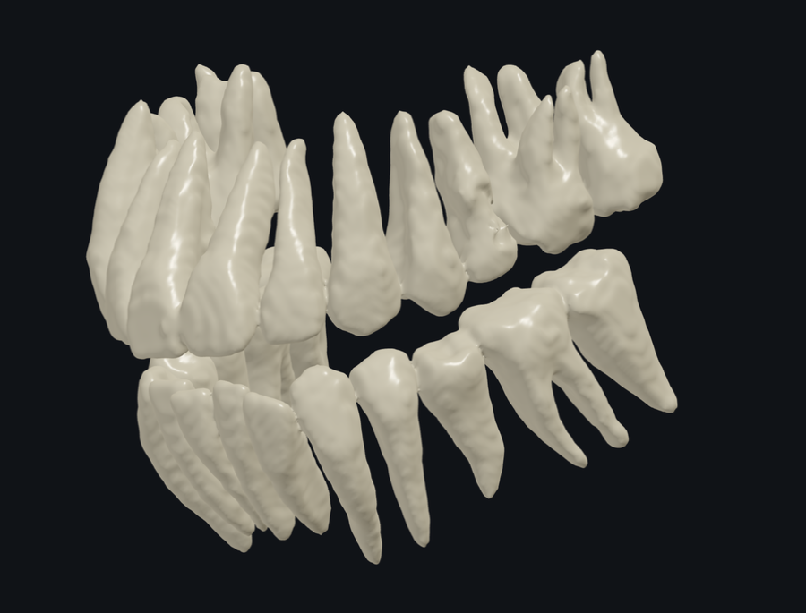
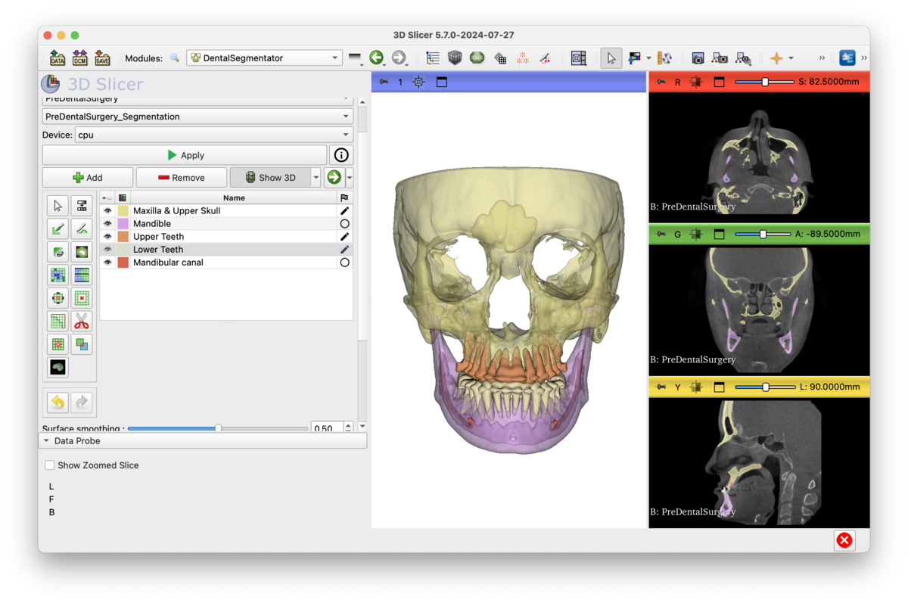

結果を操作できる状態になるまで
約3.1倍
の速度で処理が完了しました。
Macで使えるCT 3D化アプリ
3D Slicerで必要だった複雑な準備を、ボタンひとつに。 誰でも使える CT → 3D
バージョン0.3.0・Apple Silicon搭載のMac・macOS 13以降 研究・教育・検証目的に限ってご利用ください。生成結果は診断には使用できません。
この3Dは、その場で操作できます。 ドラッグで回転、拡大縮小、表示方向の変更、X-ray表示をお試しください。
最初に「準備を始める」を押すだけ。専門的なコマンドを入力せず、 アプリの案内に沿って必要な準備を進めます。
今回の検証で使った3D Slicer 5.8.0は、Intel Mac向けのアプリでした。 Apple Silicon搭載Macではその違いを補いながら動作します。さらにDentalSegmentatorでは、 画像処理に必要な追加部品（PyTorchなど）を組み合わせるため、 インストールが途中で止まることがありました。
本アプリはApple Silicon搭載Mac向けに作り、必要な追加部品の組み合わせを アプリ側であらかじめ決めています。利用者が一つずつ調整する場面を減らし、 以前の方法よりセットアップ時のエラーが起こりにくい構成にしました。


アプリには確認用のCTサンプルが付属しています。自分のデータを用意する前に、 処理の流れと3D表示の操作を確認できます。
結果を操作できる状態になるまで
短時間で全体像を確認する方法、顎骨・歯・下顎管を分ける方法、 歯を一本ずつ検出する方法から選べます。
細かな形状より、まず顎骨と歯の全体像を早く確認したいときに使います。
公式ページを見る ↗
顎骨、上下の歯、下顎管を分けて確認できます。X-ray表示にも切り替えられます。
公式ページを見る ↗
今回のCTでは約53分39秒で28本を識別しました。
公式ページを見る ↗
同じMacBook Airと同じCTで計測しました。処理時間はCTの大きさや Macの状態によって変わります。

2024年の記事 macbook airでもできる！CTから顎骨・歯のSTLデータの切り出し！ 旧記事を読む →2024年に、3D SlicerとDentalSegmentatorを使って、MacBook AirでCTから 顎骨や歯を切り出す方法を記事にしました。ところが公開後、 「インストールできません」「途中で止まります」というDMを何度もいただきました。
正直なところ、私も今回もう一度セットアップしてみて、何度か同じところで つまずきました。しかも3D Slicer側の不具合は、原因が分かっても私には直せません。 DMをいただいても「ここから先は開発元の対応待ちです」としか言えないことがあり、 ずっと歯がゆく感じていました。
それなら、自分でアプリを作ってしまえば、読み込めないDICOMや不具合にも 対応できるのでは？！ そう考えて作ったのが、このアプリです。
Keep improving
アプリとソースコードを無料で公開しています。 不具合への対応やDICOM対応の拡大を継続するため、任意の応援と個別サポートを用意します。
開発を応援していただける方から、codocを通じた任意のご支援を受け付けます。 ご支援の有無によって、アプリの基本機能や不具合報告への対応を区別することはありません。
60分 5,000円
画面を共有しながら、インストール、初回準備、基本操作、 エラーの確認をお手伝いします。公開初期の限定サポートとして準備中です。
診断、治療判断、生成結果の医学的評価は行いません。 患者情報が表示されない状態で実施し、問題の解決を保証するサービスではありません。